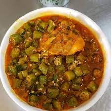
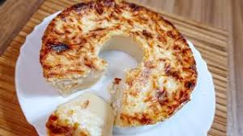
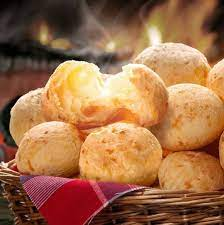

Frango com Quiabo

Sua origem remete ao século XIX, época em que o estado de Minas Gerais
passava por dificuldades no transporte de mercadorias alimentícias
provenientes de outros estados do país. Os ingredientes utilizados
para essa receita eram facilmente encontrados no estado e a partir daí se popularizaram.
Receita de Frango com quiabo
Caçarola

A Caçarola é um "bolo-pudim" muito tradicional em Minas Gerais, tanto é que até parece que nasceu aqui, em Minas,
mas sua origem não é mineira e sim italiana. A receita original foi adaptada à culinária mineira desde o século passado.
Na receita original, usa-se parmesão. Já na receita mineira, Queijo Minas meia cura.
Como não existia naquele tempos as fôrmas de pudim e bolos como temos hoje, a guloseima era feita em caçarolas comuns,
usadas no preparo das comidas. Por isso o nome, "caçarola".
Receita da Caçarola
Pão de Queijo

A origem do pão de queijo ainda é incerta. Há relatos de que a receita foi criada em Minas Gerais, no século XVIII,
quando as cozinheiras das fazendas utilizavam em suas receitas de pães a farinha de mandioca (mais tarde conhecida como polvilho)
no lugar da farinha de trigo (de baixa qualidade e imprópria para o consumo) que era trazida pelos portugueses.
Elas cozinhavam para os senhores e, junto com o polvilho, eram adicionados os queijos que sobravam e endureciam.
Na época, era costume pegar um pedaço da iguaria e comer logo após as refeições.
Assim, as cozinheiras misturavam também os ovos e o leite — que eram insumos de grande oferta,
devido à expansão da pecuária —, enrolavam toda a massa e assavam. Dessa forma, por acaso, os pãezinhos foram criados.
Receita do Pão de Queijo Mineiro